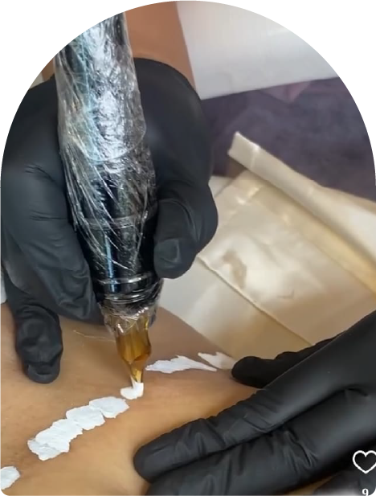

Microblanding
y Micropigmentación
Reconstrucción de areolas
La reconstrucción de areolas es una técnica
avanzada que permite restaurar la
apariencia natural del pecho después de
una mastectomía. Este procedimiento es
esencial para muchas mujeres que desean
recuperar su confianza.

Camuflaje De Cicatrices
El camuflaje de cicatrices es un
procedimiento diseñado para
minimizar la visibilidad de cicatrices
y mejorar la apariencia de la piel.
El camuflaje de estrías es una técnica
avanzada de micropigmentación que
consiste en aplicar pigmentos en las
áreas afectadas, logrando que las
estrías se mezclen con el tono
natural de tu piel
La micropigmentación de labios es un
tratamiento estético que mejora el
color y la forma de tus labios,
brindándoles un aspecto más definido
y voluminoso.